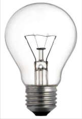
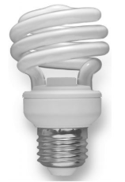
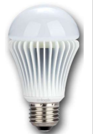

Learn About LED Lighting
-
The Basics
- What are LEDs and how do they work?
- Lifetime of LED lighting products
- Where to use LED Bulbs
- How is LED lighting different?
- Why should I choose LED lighting products?
The Basics of LED Lighting
What are LED's and how do they work?
LED stands for light emitting diode. LED lighting products produce light approximately 90% more efficiently than incandescent light bulbs. How do they work? An electrical current passes through a microchip, which illuminates the tiny light sources we call LEDs and the result is visible light. To prevent performance issues, the heat LEDs produce is absorbed into a heat sink.
Lifetime of LED Lighting Products
The useful life of LED lighting products is defined differently than that of other light sources, such as incandescent or compact fluorescent lighting (CFL). LED's typically do not “burn out” or fail. Instead, they experience ‘lumen depreciation’, wherein the brightness of the LED dims slowly over time. Unlike incandescent bulbs, LED “lifetime” is established on a prediction of when the light output decreases by 30 percent.
How are LED's Used in Lighting
LED's are incorporated into bulbs and fixtures for general lighting applications. Small in size, LEDs provide unique design opportunities. Some LED bulb solutions may physically resemble familiar light bulbs and better match the appearance of traditional light bulbs. Some LED light fixtures may have LEDs built in as a permanent light source. There are also hybrid approaches where a non-traditional “bulb” or replaceable light source format is used and specially designed for a unique fixture. LEDs offer a tremendous opportunity for innovation in lighting form factors and fit a wider breadth of applications than traditional lighting technologies.
An example of where used in the life of an LED lamp will be below in the video
How is LED lighting different than other light sources
LED lighting differs from incandescent and fluorescent in several ways. When designed well, LED lighting is more efficient, versatile, and lasts longer.
LEDs are “directional” light sources, which means they emit light in a specific direction, unlike incandescent and CFL, which emit light and heat in all directions.
That means LEDs are able to use light and energy more efficiently in a multitude of applications.
However, it also means that sophisticated engineering is needed to produce an LED light bulb that shines light in every direction.
Why should I choose LED lighting products?
The table below compares different types of light sources
| Energy efficiency & Energy Costs |  |  |  |
|---|---|---|---|
| Technology | Incandescent | Compact Fluorescent (CFL) | SMD style LED |
| Average Life Span | 1,500 hours / 6 months | 8,000 hours / 5 years | 25,000 hours / 17 years |
| Watts used | 60W | 15W | 9W |
| Annual power usage | 176KWh | 44KWh | 26KWh |
| Annual home lighting costs (Farmers $0.85 VS BEL $0.45) |
$2992 vs $1584 | $748 vs $396 | $442 vs $234 |